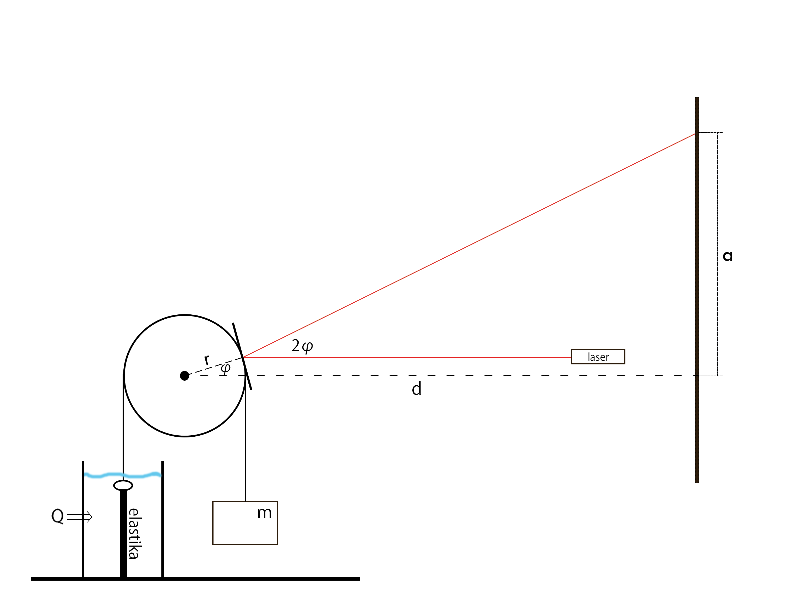
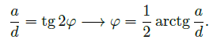
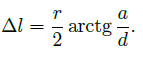
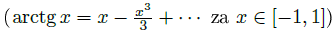
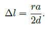
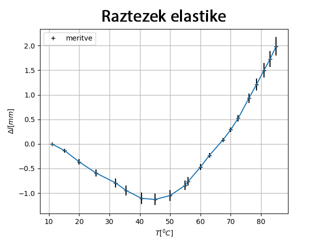
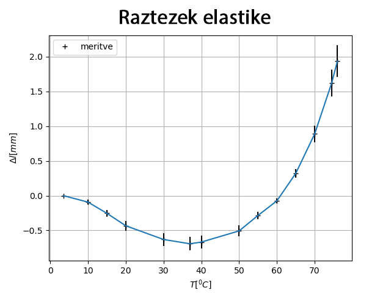
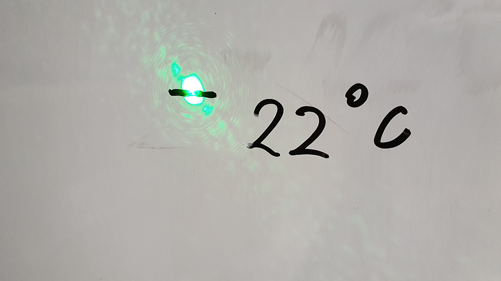

Rezultati in napake
Matematika za rezultati

Opazimo, da je

Ker velja zveza za lok kroga l = rφ (kjer je kot v radianih), lahko izpeljemo končno formulo

Ob razvoju v vrsto za majhne kote

lahko vidimo, da je

Iz tega lahko tudi sklepamo na napako člena a/d v nadaljevanju.
Rezultati poskusov
Prva skupina poskusov
Prva skupina poskusov ni pokazala nobenih obetavnih rezultatov, zato smo ojačili meritev, zamenjali pristope in poskusili znova.
Drugi poskus
Na spodnjem grafu lahko vidimo lepo linearnost. Opazimo tudi, da se elastika najprej skrči, potem pa se začne pri določeni temperaturi hitro raztegovati.

Tretji poskus
Pri tretjem poskusu smo zaradi primerjave rezultatov samo zamenjali vrsto elastike, ki je nismo predhodno deformirali.

Napake poskusov
Merske napake
Dolžina razdalje do laserja
Pri merjenju dolžine razdalje do laserja (d = 869 cm ± 5 cm) postane ocenjena napaka 0.575 %. Napako smo tako ocenili zaradi izbire merilnega sredstva in nenatančnosti ponovitev merjenja.
Razdalja osišča do vrvice
Pri merjenju razdalje osišča do zrcala (2.25 cm ± 0.2 mm) postane ocenjena napaka 0.899 %. Napako smo ocenili tako zaradi izredne natančnosti kljunastega merila.
Napake pri meritvi temperature
Napaka pri meritvi temperature je bila ocenjena kot 0.2 K zaradi spošne zamude označevanja in možne nenatančnosti termometra (prebrana par promilov).
Napaka pri izmerku premika
Zaradi razširitve snopa svetlobe in nenatančnega načina označevanja smo ocenili napako pri premiku kot 1 cm.

Napake zaradi deformacij
Omeniti moramo morebitne napake zaradi trajnih deformacij elastik (masa in vročina). S podposkusi smo videli, da se ob vročini in nategu elastike trajno deformirajo (postanejo mehkejše). Tukaj napake na žalost nismo sposobni oceniti, vendar smo se ji poskusili izogniti v drugem poskusu za kvalitativno kvantifikacijo le-te (elastike smo predčasno pregreli, uporabljali smo lažje uteži - manjšo silo), tako da smo čim bolj zmanjšali medposkusno deformacijo. Pri grafu drugega poskusa, kjer je bila elastika vnaprej deformirana, je možno videti veliko boljšo linearnost kot pa pri grafu tretjega poskusa, iz česar bi lahko sklepali, da se je elastika deformirala med poskusom samim.